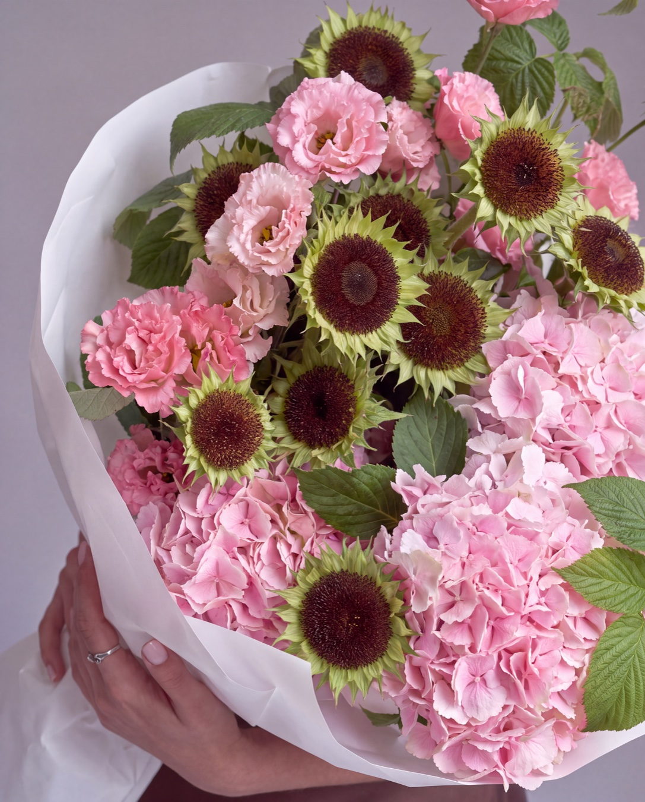
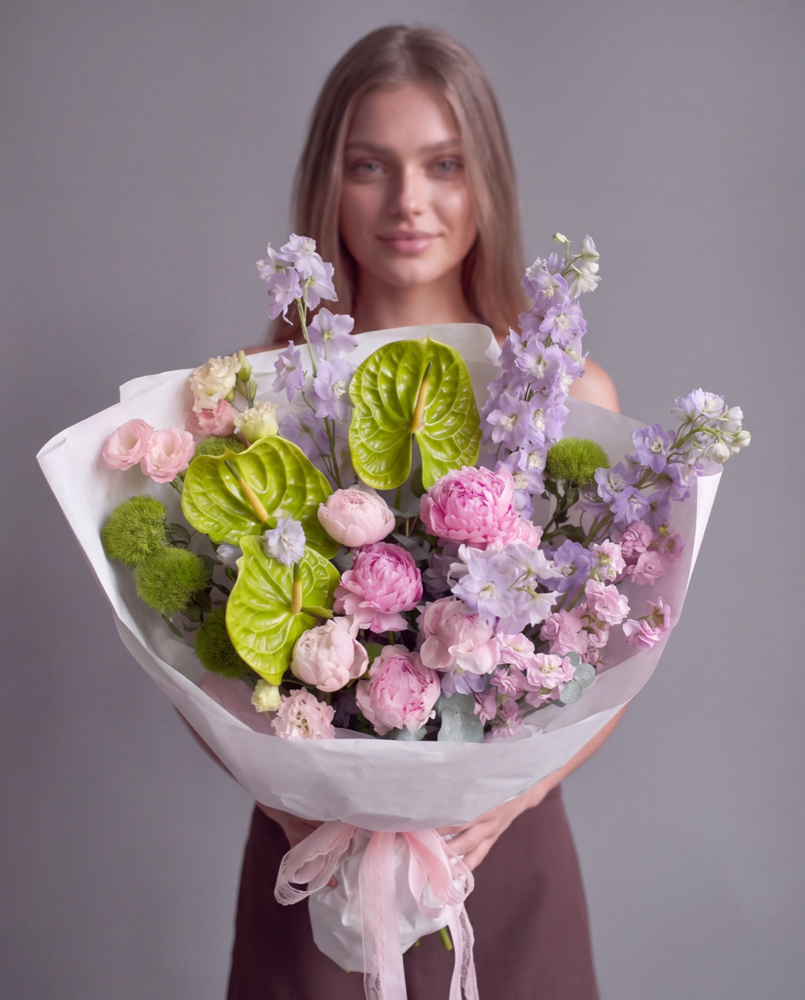
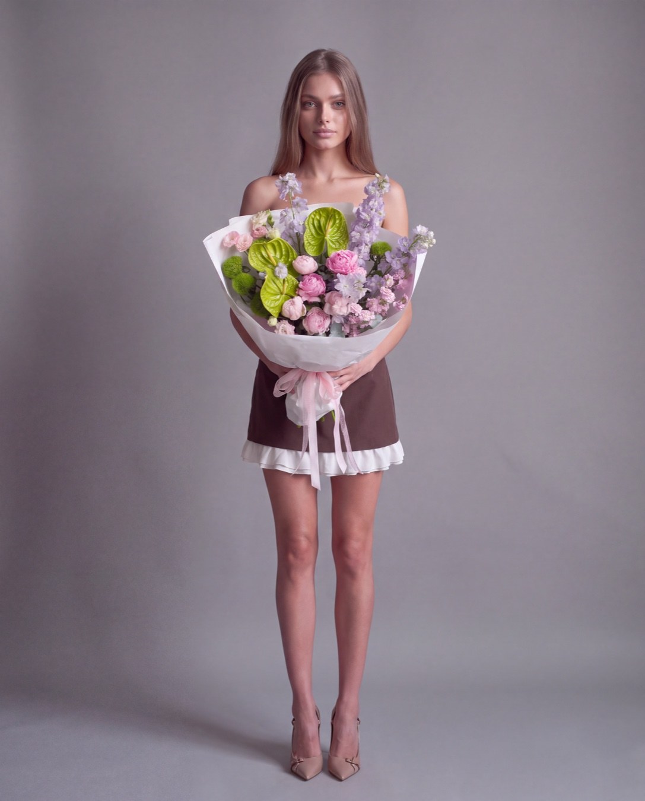
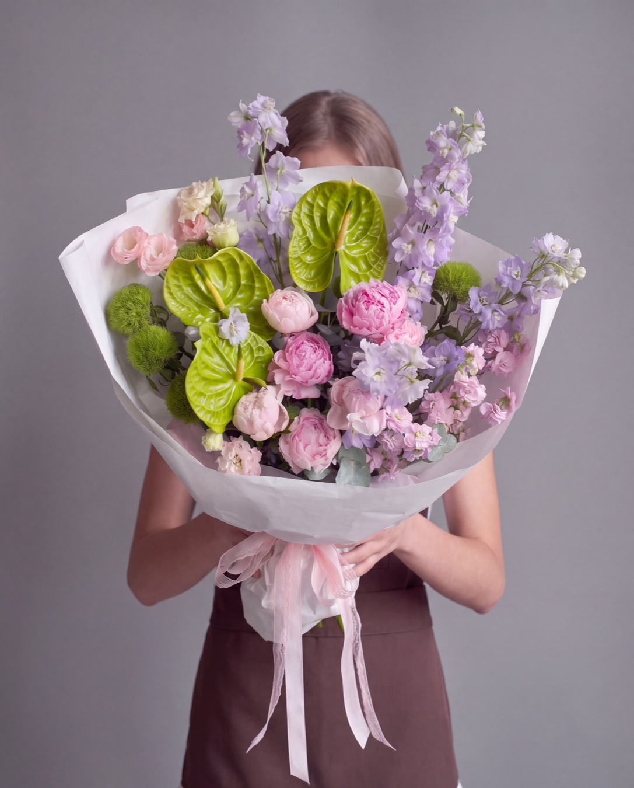
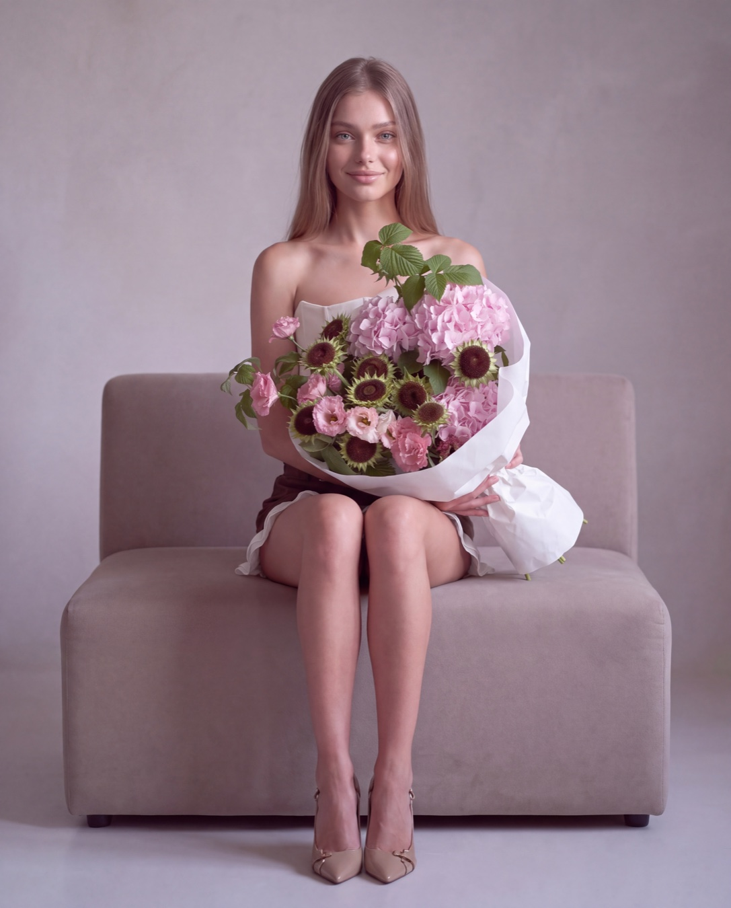
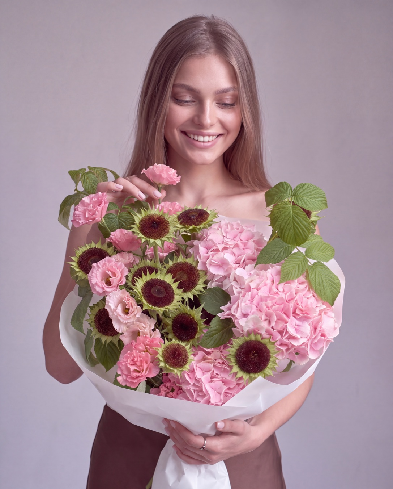

Карточка товара — это витрина: по ней букет либо покупают, либо листают дальше. Обычно ради неё собирают студию — фотограф, модель, свет — или снимают букет на телефон у стены подсобки, и он «висит в воздухе»: ни масштаба, ни настроения. Эту карточку мы собрали нейросетью: настоящий букет, своя модель и пять кадров для страницы товара. Это самый простой формат — без сложных поз и локаций: такую карточку можно поручить AI-агенту, а кадры ставить на сайт.
Карточка продаёт один конкретный букет, и продаёт его картинкой: состав, размер, настроение. Одного кадра мало — покупателю нужен главный кадр, масштаб в руках, деталь крупно.
Снимать так каждый букет — значит держать студию под рукой: фотограф, модель, свет, и всё это ради страницы, которая живёт, пока букет в наличии. А без человека в кадре букет теряет размер: та же охапка на белом фоне выглядит вдвое меньше.
Здесь карточка собирается из того, что у магазина уже есть: реального букета и один раз созданной модели. Студию заменяет нейтральная сцена, которую задаёт нейросеть.
Порядок прежний: сначала настоящий товар, потом постоянная героиня, и только после — сцена и ракурсы. Карточка — самый строгий формат из всех: здесь покупатель сверяет картинку с тем, что ему привезут.

Карточка продаёт конкретный букет, поэтому он в кадре настоящий: гортензии, эустома, декоративные подсолнечники. Состав, сборка и пропорции — реальные.
Покупатель сверит то, что привезли, с тем, что видел на сайте. Это единственный кадровый формат, где расхождение сразу превращается в претензию.
Правило: букет из магазина, не из нейросети.

Героиня — та же своя модель, что создавалась в разборе «Своя модель», и даже образ тот же. Паспорт из восьми ракурсов прикладывается к каждой генерации.
Так витрина остаётся спокойной: один человек в одной одежде во всех карточках, и внимание покупателя идёт на букеты, а не на смену лиц.
Правило: один паспорт — все съёмки.

Нейтральный серый фон, ровный мягкий свет, спокойная поза. В карточке ничего не должно спорить с букетом — ни фон, ни наряд, ни тени.
Кадр в полный рост обязателен: он показывает настоящий масштаб. Без человека рядом покупатель не видит, что букет — в обхват руками.
Правило: фон не спорит с товаром.



Главный кадр — тот, где букет крупнее лица: модель прячется за цветами, и глаз покупателя остаётся на товаре. Дальше — кадр-настроение на диване и живая эмоция со взглядом на букет.
Вместе с полным ростом и макро получается пять кадров — полная страница товара с одного захода: главный, масштаб, настроение, эмоция, детали сортов.
Честный список того, на чём ломается карточка товара. Это самый строгий формат: ошибки, простительные в соцсетях, здесь стоят продаж.
Если в главном кадре открытое лицо модели, глаз покупателя уходит на человека, а не на букет. Поэтому в главном кадре лицо спрятано за цветами или букет заметно крупнее лица. Кадры с эмоцией — дополнительные, не главные.
Карточка без человека не передаёт размер: одна и та же охапка на чистом фоне кажется вдвое меньше, и покупатель разочарован «маленьким» букетом, который на деле в обхват руками. Масштаб дают руки и рост модели.
Кадр с деталями — обязательный: по нему сверяют состав. И он же самый опасный — если нейросеть дорисовала лепестки или выдумала цветок, видно будет именно здесь. Макро проверяем в первую очередь, до публикации.
Промты сцены и каждого ракурса карточки, порядок работы с паспортом модели и готовая связка целиком — в картотеке.
Человек в кадре даёт масштаб: без него один и тот же букет кажется меньше, чем есть. Плюс видно, как букет держать и нести — покупатель примеряет его на себя ещё до заказа.
Да. Букет настоящий и один на всю карточку: гортензии, эустома и декоративные подсолнечники не меняются от кадра к кадру. Нейросеть меняет позу модели и ракурс, но не состав букета.
В этом и смысл своей модели: её создают один раз, а дальше она снимается во всех карточках и сериях. Одна героиня в одном образе делает витрину спокойной — покупатель смотрит на букеты, а не на смену лиц.
Рабочий набор — главный кадр, где букет крупнее лица, плюс три-четыре дополнительных: полный рост для масштаба, кадр-настроение и обязательное макро, по которому покупатель сверяет состав.